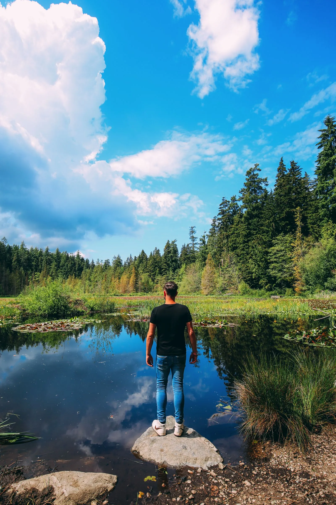
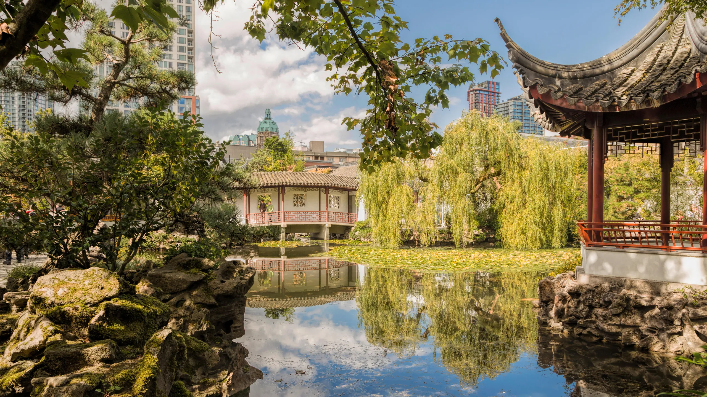
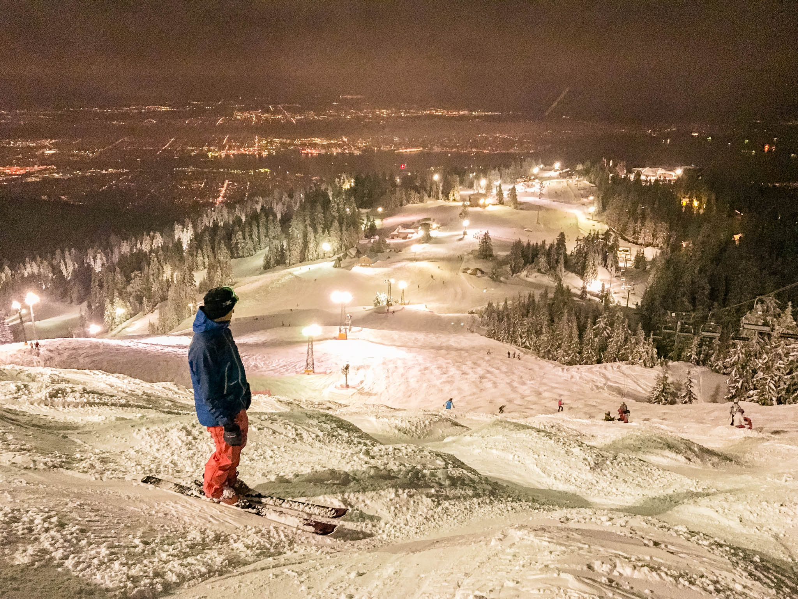
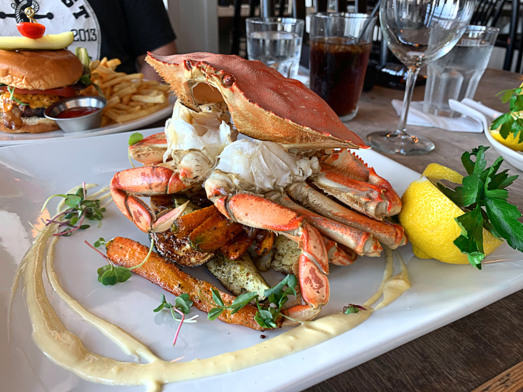
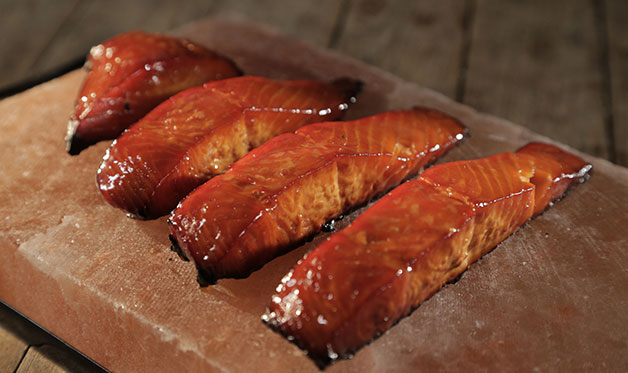
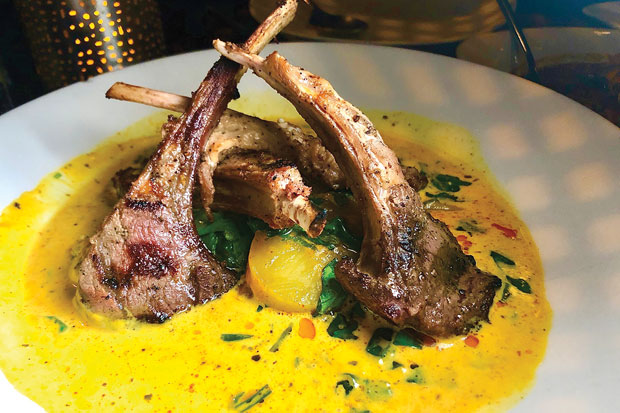

1: Stanley Park
|  | Vancouver’s first official green space, Stanley Park, is a massive and stunning spot just north of the downtown area.Almost entirely surrounded by the sea, it’s one of the best places to see in Vancouver if you fancy a more relaxing time exploring the city. The whole coastal route around the park and the inner trails are totally stunning. |
|---|
2: Chinese Garden
|  | This beautiful and almost otherworldly garden is the first of its kind outside of China, allowing the people of Vancouver a chance to more fully explore Chinese culture. Built between 1985-1986, the Chinese Garden takes its inspiration from scholars’ gardens of the Ming Dynasty, with both Chinese and Canadian workers helping to create the space. It really is pretty special. Guided tours are included with the price of admission, and there are always different exhibits available for viewing. |
|---|
3: Grouse Mountain
|  | Grouse Mountain has North America’s largest aerial tramway, the Skyride, which is the easiest way to get up. The Skyride takes you a whopping 3,700 feet (1,128 m) to the Alpine Station, where you can head of skiing, snowmobiling, or head on the trails, too.Whether you’re a beginner, pro, or perhaps you just want an incredible view, Grouse Mountain is one of the best places to see in Vancouver. |
|---|
4: Dungeness crab
|  | Dungeness crab might be named for the port town of Dungeness over the border in the USA, but it's still one of the most prized seafood bounties of the Vancouver coastline. It's fished all up and down the region and is typically found living on grassy seabeds in shallower parts of the Pacific. It's considered a delicacy of British Columbia, mainly because just a quarter of the weight of any caught crab is edible meat. Said meat has a well-balanced sweetness and saltiness. It's sometimes cooked whole but can also be cut in half and then boiled. You can also purchase raw Dungeness crabs to cook for yourself at the Granville Island Public Market. |
|---|
5: Salmon Candy
|  | Vancouver food is definitely emerging as one of the top-ranking food due to the seafood served in the city. Salmon candy is one dish that makes it impossible to stop eating once a traveler or a local tries it. Made by smoking the salmon and glazing it with the famous maple syrup, the salmon candy oozes out the flavors of salty, sweet, and smokey all in one, and it becomes difficult to not make this an addiction. The way maple syrup balances out the saltiness of smoked salmon is capable of turning a non-fish lover into fish-lover! |
|---|
6: Lamb Popsicles
|  | Served in the restaurant owned by Vikram Vij, lamb popsicles are certainly the must-try Indian food in Vancouver. One of the many specialties of the chef, lamb popsicles tastes nothing like one could have ever tasted before. The pink racks of lamb marinated in the white wine, mustard, and Indian spices, is not a dish that is eaten only by mouth. The appearance and fragrance of the dish make it possible for the diners to relish the dish through eyes and nose as well. The aroma of this dish is capable of making even the non-hungry people crave for it! |
|---|